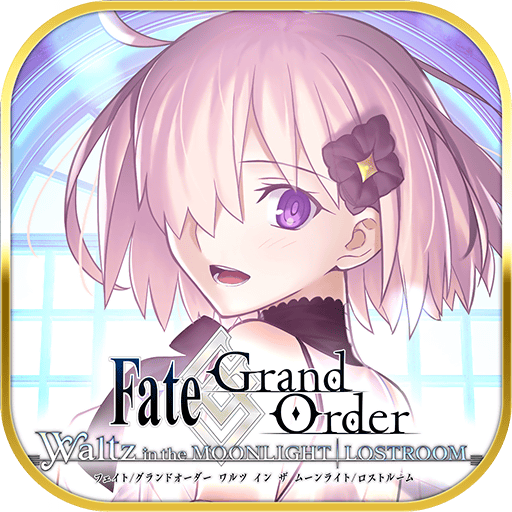
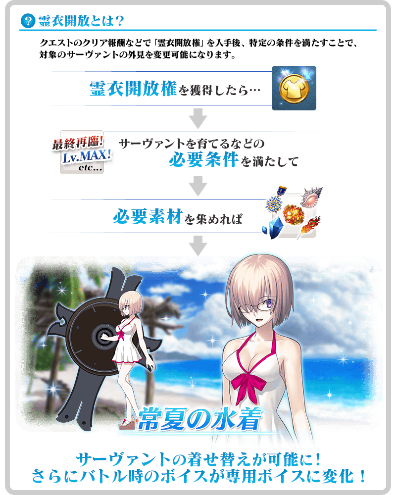

為了記念「Fate/Grand Order」5周年特別企劃「Fate/Grand Order Waltz in the MOONLIGHT/LOSTROOM」的新章開幕及配合的再配信，舉辦『「Fate/Grand Order Waltz in the MOONLIGHT/LOSTROOM」配信記念宣傳活動 第2彈』！
◆舉辦期間◆
2020年8月25日(二) 17:00～9月8日(二) 11:59
■「Fate/Grand Order Waltz in the MOONLIGHT/LOSTROOM」概要
「Fate/Grand Order Waltz in the MOONLIGHT/LOSTROOM」是為了記念「Fate/Grand Order」5周年所製作的iOS/Android用Fate合奏動作。
因好評結束了配信，這次配合新章開幕決定24小時限定再配信！
由於也有追加對應機種，請藉此機會享受月之光的舞蹈會吧！
◆程式再配信期間◆
自2020年8月25日(二) 17:00預定24小時限定再配信
※沒有限制下載數的限制。
※App Store、Google Play上反映程式的配信需要一些時間。敬請諒解。
※根據至App Store、Google Play的反映時間，再配信期間會有前後差異。
【詳情在官方網站】
https://www.fate-go.jp/fgow/

Fate/Grand Order
Waltz in the MOONLIGHT/LOSTROOM
(App Store、Google Play)
價格:免費(App內無課金)
在達文西工房的「稀有稜鏡交換」追加「★3(R)瑪琇・基利艾拉特」的靈衣「常夏的泳裝」開放權獲得關卡！
用稀有稜鏡5個交換後，可入手上述靈衣開放權。
另外，想靈衣開放的話，除了靈衣開放權外再加上必須滿足一些開放條件。
◆追加時間◆
2020年8月25日(二) 17:00～
◆交換條件◆
滿足以下的條件才能御主交換
・通過「特異點F 炎上汙染都市 冬木」
・未通過期間限定活動「復刻:夏日！ 大海！ 開拓！ FGO 2016 Summer 迦勒底夏日回憶 ～療癒白沙灘～ 輕量版」的關卡「ビーチフラワー」
※在「稀有稜鏡交換」追加的靈衣「常夏的泳裝」開放權獲得關卡為永久，沒有交換期限。 ※關於已經獲得交換對象靈衣開放權的玩家，無法交換。
◆有關靈衣開放權的注意◆
※「★3(R)瑪琇・基利艾拉特」的靈衣會配合外觀變化一部份語音。
◆追加道具(永久)◆
靈衣「常夏的泳裝」開放權獲得關卡
| 追加道具 | 能交換次數 | 1次交換需要的 稀有稜鏡數 |
|---|---|---|
| 靈衣「常夏的泳裝」開放權獲得關卡 | 1次 | 5個 |


「靈衣開放」是自強化畫面進行。
※「靈衣開放」後會自動切換戰鬥角色和圖示。若想回到「靈衣開放」前的狀態和變成其他再臨階段的情況，可自從者詳細畫面變更。 ※進行「靈衣開放」不會讓職階和能力等有所變化。

為了記念「Fate/Grand Order Waltz in the MOONLIGHT/LOSTROOM」配信所舉辦的『「Fate/Grand Order Waltz in the MOONLIGHT/LOSTROOM」配信記念關卡』期間延長。
通過下述的期間中在迦勒底之門出現的『「Fate/Grand Order Waltz in the MOONLIGHT/LOSTROOM」配信記念關卡』，得到關卡限定的概念禮裝吧！
另外，關卡內的文字冒險部份中，也能享受展現「Fate/Grand Order Waltz in the MOONLIGHT/LOSTROOM」世界観的透過3D模型演出。
透過3D模型的演出中，也準備瑪琇的語音，請務必將音量設定ON享受吧！
※『「Fate/Grand Order Waltz in the MOONLIGHT/LOSTROOM」配信記念關卡』不會在個人空間(マイルーム)的圖鑑(マテリアル)追加。
◆舉辦期間◆
2020年8月25日(二) 17:00～9月8日(二) 11:59
◆關卡開放條件◆
通過「終局特異點」的御主對象
※不需要通過亞種特異點(從Ⅰ到Ⅳ)及第2部序幕(プロローグ)「序」以後的主線關卡。
◆『「Fate/Grand Order Waltz in the MOONLIGHT/LOSTROOM」配信記念關卡』限定概念禮裝◆
|
★★★★SR |